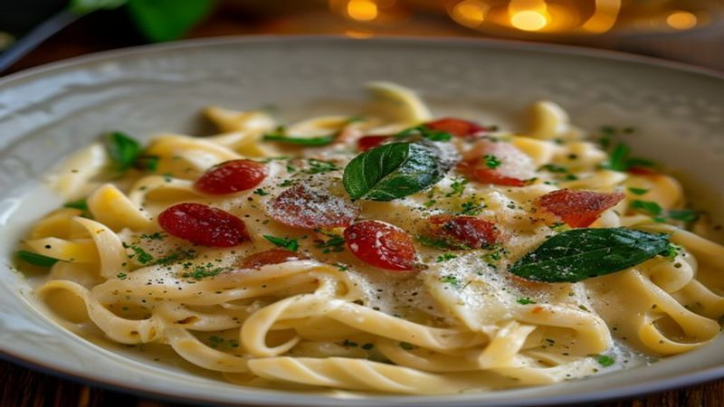

One-Pot Creamy Tuscan Pasta
This One-Pot Creamy Tuscan Pasta is loaded with sun-dried tomatoes, spinach, and garlic in a rich cream sauce. Ready in 20 minutes with minimal cleanup!
Ingredients
- 12 oz penne pasta
- 2 tablespoons olive oil
- 4 cloves garlic, minced
- 1/2 cup sun-dried tomatoes, chopped
- 3 cups chicken or vegetable broth
- 1 cup heavy cream
- 2 cups fresh baby spinach
- 1/2 cup grated Parmesan cheese
- 1 teaspoon Italian seasoning
- Salt and pepper to taste
- Fresh basil for garnish
Instructions
Who says gourmet pasta requires tons of pots and pans? This One-Pot Creamy Tuscan Pasta is rich, creamy, and absolutely loaded with flavor — all made in a single pot in just 20 minutes!
Heat olive oil in a large deep skillet or Dutch oven over medium heat. Add the minced garlic and cook for 30 seconds until fragrant. Toss in the sun-dried tomatoes and Italian seasoning, stirring for another minute.
Pour in the broth and heavy cream. Bring to a boil, then add the penne pasta. Stir well to prevent sticking.
Reduce heat to medium-low and let it simmer for 12-14 minutes, stirring every few minutes, until the pasta is al dente and the sauce has thickened beautifully.
Stir in the fresh spinach and Parmesan cheese. The spinach will wilt down in about 2 minutes and the cheese will melt into the most luscious sauce.
Season with salt and pepper to taste. If the sauce is too thick, add a splash of broth to loosen it up.
Serve hot, garnished with fresh basil leaves and an extra sprinkle of Parmesan. This dish is best enjoyed immediately while the sauce is silky smooth.
One pot, 20 minutes, and a restaurant-quality pasta dinner on the table! This is the ultimate weeknight hero recipe. Your family won't believe how easy it was!
Recommended Kitchen Essentials
Every great recipe starts with great tools. Here are our top picks to make cooking easier and more enjoyable:
Support Quick Bites Kitchen — When you purchase through our links, we may earn a small commission at no extra cost to you. This helps us keep creating free recipes for everyone. Thank you!